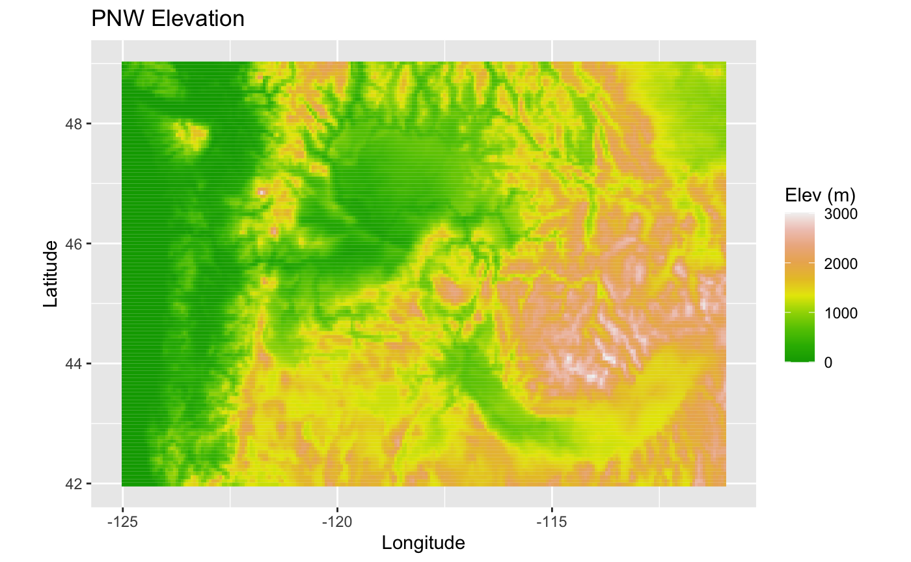

The USFS AirFire team uses meteorological forecasts produced by the Weather Research & Forecasting (WRF) model. These “model runs” predict atmospheric conditions over the US for several dozen hours ahead. Output from each WRF model run is stored as a collection of files containing data for individual forecast hours. For instance, a file named PNW-4km_2020082712_07.nc would describe the PNW-4km atmosphere forecasted 7 hours after the start of the 2020-08-27 12pm model run.
The WRFmet package allows users to download, read, and visualize the contents of these individual WRF data files.
NOTE: Because WRF output files are very large, R code in this vignette is not run when the package is built. This document contains output from commands run on August 31, 2020.
In order to start analyzing WRF output, we should first determine which model runs are available through AirFire. This can be done using the wrf_latestModelRun() function, in which we specify a model domain and the maximum number of recent model runs to be listed (defaults to 1):
library(WRFmet)
modelRun <- wrf_latestModelRun(modelName = "PNW-4km")
modelRun[1] "2020083112"The most recent model run was initialized at "2020-08-31 12:00:00 UTC". Before we try to download files from that run though, we should first define a directory to hold all our WRF data. A file for a single forecast hour can be upwards of a hundred Megabytes, so a whole model run (AirFire’s are typically 84 hours) could take up quite a bit of space. Therefore, it is nice to specify a dedicated place to hold all this information, and we can do that using WRFmet’s setWRFDataDir() function:
setWRFDataDir("~/Data/WRF")Now let’s request one of the forecasted hours from the "2020-08-31 12:00:00 UTC" model run. Running wrf_download() will give us a file name which we can use for later, and if the file already exists on our machine then it will not be downloaded again.
wrfFile <- wrf_download(
modelName = "PNW-4km",
modelRun = modelRun,
modelRunHour = 7 # 7 is the first hour available in most model runs
)
print(wrfFile)[1] "/Users/jonathan/Data/WRF/PNW-4km_2020083112_07.nc"We can see what WRF files we’ve already downloaded into our WRFDataDir/ with wrf_downloaded():
wrf_downloaded()[1] "PNW-4km_2020083112_07.nc"So now we have access to a single hour in a WRF model run. This file holds readings for over a hundred different variables in a grid across the PNW-4km domain. We can load this data in as a raster object to start analyzing and plotting its contents. In addition to the model run identifiers (domain, run, hour), we must also specify what variables we’d like to include and – if we choose – the resolution and extent of the raster that will be created.
raster <- wrf_load(
modelName = "PNW-4km",
modelRun = modelRun,
modelRunHour = 7,
vars = c("HGT", "TSK"), # Meter elevation (HGT) and Kelvin temperature (TSK)
res = 0.1 # Grid cells will be .1x.1 degrees lon/lat
)If you would like to simply provide the path of a WRF file, you can pass that in with wrf_load’s localPath argument. If the specified model run hour is not on your machine, it will be downloaded behind the scenes if it is available from AirFire.
raster <- wrf_load(
localPath = '~/some/other/dir/PNW-4km_2020071512_07.nc',
vars = c("HGT", "TSK"),
res = 0.1
)The output of wrf_load() is a raster package RasterBrick object with a separate RasterLayer for each specified variable.
print(raster)class : RasterBrick
dimensions : 111, 234, 25974, 2 (nrow, ncol, ncell, nlayers)
resolution : 0.1001554, 0.1000347 (x, y)
extent : -130.4868, -107.0504, 39.49399, 50.59784 (xmin, xmax, ymin, ymax)
crs : +proj=longlat +datum=WGS84 +ellps=WGS84 +towgs84=0,0,0
source : memory
names : HGT, TSK
min values : -5.960464e-08, 2.731600e+02
max values : 3571.1672, 317.7452 Let’s find out what these atmospheric readings actually look like. WRFmet provides several preset plotting functions for visualizing this information as rasters and vector fields with spatial point/polygon overlays. These functions include:
plot_raster() - Plots a single RasterLayer.plot_standard() - Plots a RasterLayer, SpatialPolygonsDataFrame, SpatialPointsDataFrame, and a vector field, in that order. Any of these can be missing, so this is more of a catch-all plot that can do the same as plot_raster(), just with many more options.So let’s throw together a plot for the elevation (HGT) field of our raster:
NOTE: In order to build this vignette, this plot will display an example raster provided by WRFmet package “example_PNW”.
## Loading required package: sp## class : Extent
## xmin : -125.0323
## xmax : -110.9465
## ymin : 41.95484
## ymax : 49.03729plot_raster(
raster = WRFmet::example_PNW$HGT,
title = "Pacific Northwest Elevation",
flab = "Elev (m)",
ratio = 1.4
)
…
These plots are actually preset combinations of various building-block “layers”. Custom plots can be built by stacking these layers which function similar to ggplot’s geom_* elements. This process is covered in further detail in the “Static Layered Plots” article.